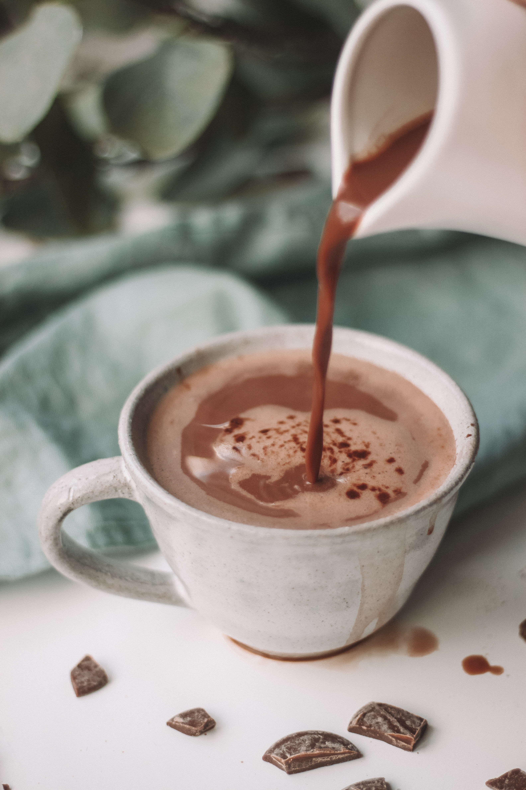

Irrisistable Alternatives...

Serendipity's Frozen Hot Chocolate
- 6 half-ounce pieces of a variety of your favorite chocolates
- 2 teaspoons storebought hot chocolate mix
- 1 1/2 tablespoons sugar
- 1 1/2 cups milk
- 3 cups ice
- Whipped cream
- Chocolate shavings
Directions:
- Chop the chocolate into small pieces.
- Place it in the top of a double boiler over simmering water, stirring occasionally until melted.
- Add the cocoa and sugar, stirring constantly until thoroughly blended.
- Remove from heat and slowly add 1/2 cup of the milk and stir until smooth.
- Cool to room temperature.
- In a blender place the remaining cup of milk, the room temperature chocolate mixture, and the ice.
- Blend on high speed until smooth and the consistency of a frozen daiquiri.
- Pour into a giant goblet and top with whipped cream and chocolate shavings.
- Enjoy with a spoon or a straw. . . .or both!

Hotel Bel-Air's Boozy Hot Chocolate
- Makes: 1 cocktail
- Ingredients:
- 4 oz cream
- 8 oz milk
- 5 oz chocolate, 64% or darker
- 1 tsp dark cocoa powder
- 1 oz sugar
- 2 oz Hudson Baby Bourbon ($45, mashandgrape.com)
- 6 oz heavy cream
- 1/4 Maldon sea salt
Directions:
- Bring cream and milk to a simmer in a small sauce pot.
- Stir in sugar and cocoa powder and whisk.
- Pour hot liquid over chocolate.
- Blend with a hand blender until frothy and light.
- Stir in bourbon.
- For garnish: whip cream and salt until medium peaks. Place a generous spoonful on top of the Bourbon Hot, and enjoy!

Nutella Hot Chocolate
- 4 cups low fat/skim milk
- 2 tablespoons Nutella
- 2 tablespoons unsweetened cocoa powder
- 2 tablespoons sugar
- Marshmallows
- Crushed hazelnuts
- Chocolate chips
- Extra Nutella
Directions:
- Heat milk in a medium sized saucepan on medium-high heat until beginning to warm and steam.
- Add the spread, cocoa powder and sugar.
- Whisk until dissolved and combined.
- Bring to a gentle simmer while stirring, and take off heat.
- Serve with your desired toppings.